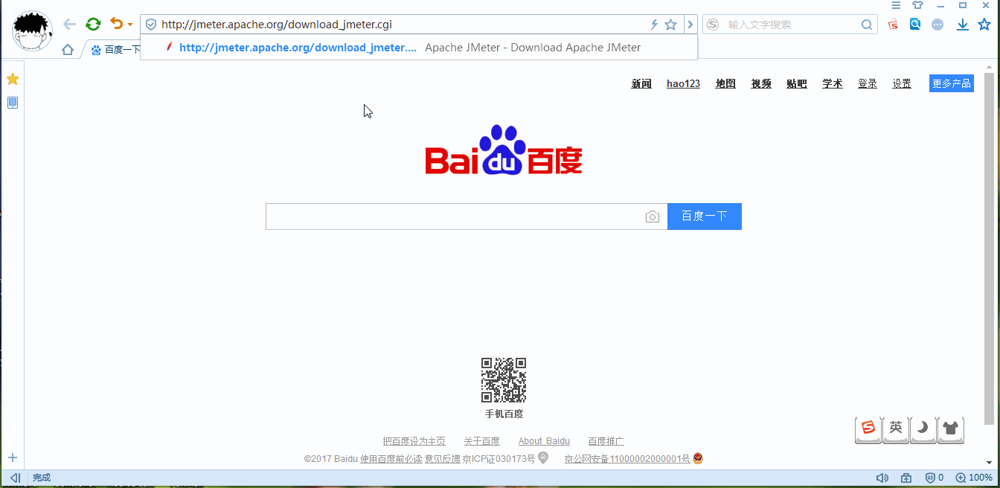

Jmeter工具安装
目标
- 了解Jmeter安装目录结构
2. Jmeter下载与安装
2.1 官网下载地址:
http://jmeter.apache.org/download_jmeter.cgi
下载示意图(安装包)

注意：
下载后，解压文件到任意目录，避免在一个有空格的路径安装Jmeter，这将导致远程测试出现问题。
2.2 启动JMeter的两种方式：
进入bin目录
方式1: 双击 ApacheJMeter.jar文件(最常用);
方式2: 双击 Jmeter.bat文件(有黑窗口并且不能关闭,是服务端);
- 方式3: linux 下启动Jmeter == meter.sh
3 Jmeter常用目录文件介绍
3.1 Bin目录
存放可执行文件和配置文件
- Jmeter.bat：windows系统中JMeter的启动文件
- ApacheJMeter.jar Java环境下的JMeter启动文件
- Jmeter.log：日志文件
- Jmeter.sh：linux系统中JMeter的启动文件
- Jmeter.properties：系统配置文件
- Jmeter-server.bat：windows分布式测试要用到的服务器配置
- Jmeter-serve：linux分布式测试要用到的服务器配置
3.2 docs目录(了解开源)
docs：是JMeter的java Doc，可打开api\index.html页面来查看;
3.3 printable_docs目录
printable_docs的usermanual子目录下的内容是JMeter的用户手册文档，其中usermanual下component_reference.html是最常用到的核心元件帮助文档。